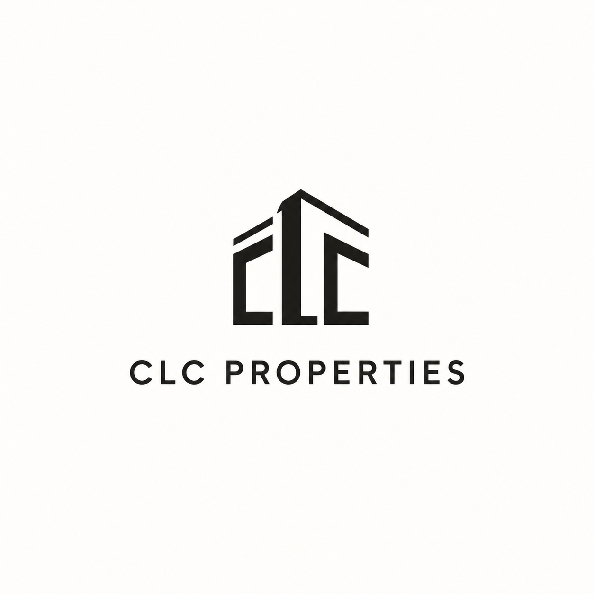

Building Mark
A clean building-shaped CLC mark that feels modern, local, and easy to recognize.

Why It Stands Out
The letters become the building. It feels more intentional than a generic property icon.
Best Use
This could work as the main identity, website header, social avatar, and sign-style mark.
Talking Point
This is probably the strongest early concept if he wants something new without feeling flashy.